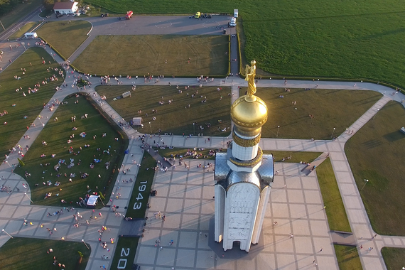
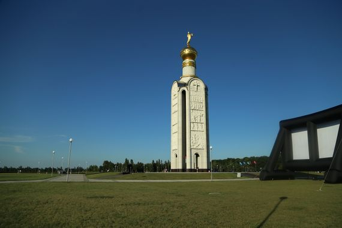

Звонница на Прохоровском поле

- Режим работы: круглосуточно
- Цена за вход: бесплатно
- Местоположение: Прохоровка, Белгородская обл.
Находится данный мемориал в 2-х километрах от поселка Прохоровка. Место выбрано неслучайно: именно на этом поле был переломный момент в Великой Отечественной войне, танковое сражение стало плацдармом в будущей победе.  Над мемориалом работали скульптор В. М. Крылов, инженер Г. Солохин и архитектор А. Семирджиев. Звонница была построена в 1995 году в честь 50-летия со дня Великой Победы. Состоит памятник из 4 стел-барельефов из белого гранита, объединенных между собой, а наверху возвышается скульптура Покрова Пресвятой Богородицы.  Внутри монумента находится часовня с колоколом весом 3,5 тонны. Трижды в час, он совершает звон в честь трех великих боевых событий, которые повлияли на историю русского народа. Первый удар в память о Куликовском поле, второй удар - о героях сражения Бородино, а третий - о битве на Прохоровском поле. Как снаружи, так и изнутри весь памятник украшен лепными горельефами, по 6 на каждой стороне. На них изображено более 130 исторических образов народных защитников.